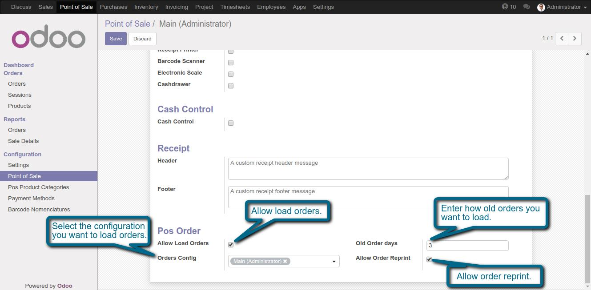
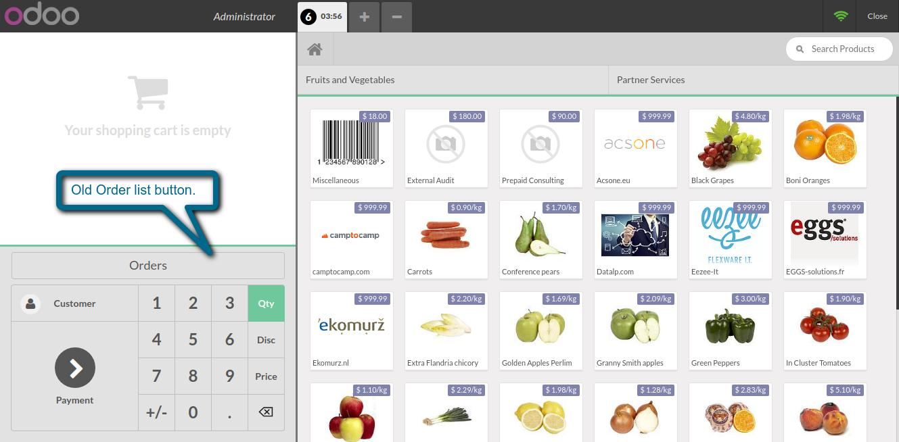
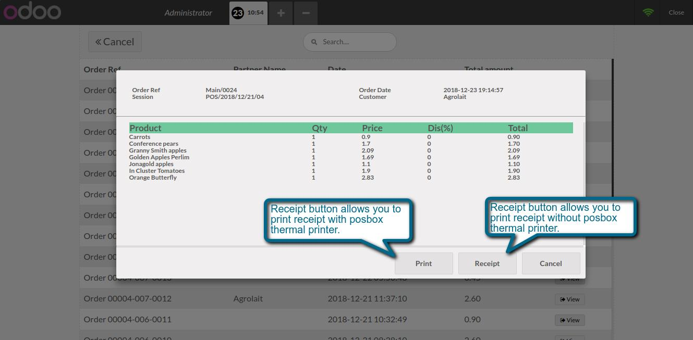
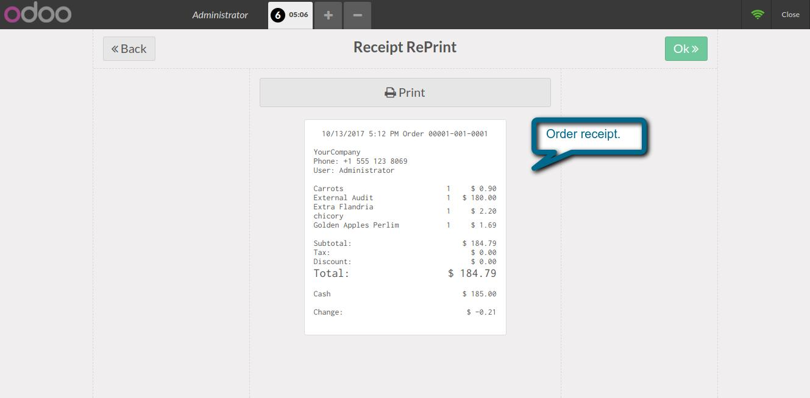

POS Order Reprint
This module helps us to reprint old receipt.
Features
- This module allows you to reprint the receipt by posbox thermal printer and normal printer.
1. Allow order reprint.

2. Old Order list button.

3. List of old orders.
4. Receipt reprint button.

5. Receipt view.

If You Need Any Help Please Contact
Email Id: dev.webveer@gmail.com